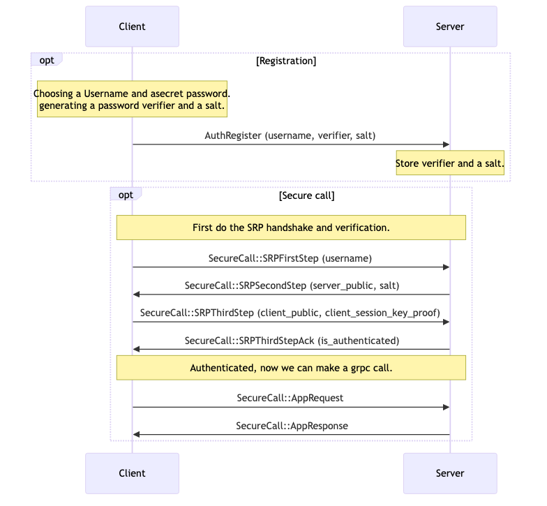

Vault
Public Github Repository link¶
https://github.com/jonco5555/vault
Public Documentation link - Highly recommended instead of reading the pdf¶
Contains the same content as this pdf, but more convenient.
https://jonco5555.github.io/vault
The Problem space¶
In modern digital systems, protecting sensitive information such as cryptographic keys, credentials, and personal data is a critical challenge. Secrets are often stored and accessed remotely, which raises the risk that a single server compromise can expose the entire dataset. At the same time, authorized users must be able to reliably retrieve these secrets without excessive complexity or performance overhead. This tension between security, availability, and usability defines the core problem space.
The state of the art in secure storage systems has made significant progress in mitigating these risks, but most conventional approaches still rely on a central trusted server or service. Such single-trust models introduce a single point of failure: once breached, all stored secrets become vulnerable. Even advanced password hashing and encrypted storage techniques cannot fully eliminate this dependency. As a result, current solutions remain exposed to insider threats, server breaches, and large-scale data leaks.
Our Solution - The Vault¶
Our project introduces a secure digital secret manager that we call Vault.
The Vault is designed to securely store and retrieve sensitive secrets on a remote server. The product combines multiple security primitives — TLS, SRP authentication, threshold cryptography, and end-to-end encryption — to create a solution where no single server can compromise a user’s data. At the core of the design, secrets are encrypted by the user before leaving their device, stored only in encrypted form by the manager, and can only be reconstructed through cooperation between multiple share-servers and the user. This ensures that even if attackers gain partial control over the infrastructure, confidentiality of the secrets is preserved.
To support these guarantees, the system architecture introduces several coordinated services:
Manager: Orchestrates all operations, including registration, storage, and retrieval.Bootstrap: Generates cryptographic shares and is immediately destroyed to reduce the attack surface.ShareServer: Each holds part of the decryption capability, requiring collaboration to restore user secrets.User: Communicates with the system over TLS and authenticates via SRP, ensuring resilience against replay and impersonation.
Together, these components form a robust product that addresses the challenges of secure remote secret management.
Threat model¶
We assume a powerful attacker with the following capabilities:
- Eavesdropping and Tampering: The attacker can intercept, replay, and modify network traffic between the user, manager, bootstrap, and share servers.
- Replay and Impersonation Attempts: The attacker may try to impersonate the user or replay old authentication messages to trick the system.
- Compromised Servers: The attacker may compromise one or several share servers or even the manager service.
- Malicious Bootstrap: The bootstrap service could be compromised during setup. This risk is mitigated by its short lifetime — it is created for key generation and immediately destroyed.
However, we assume that:
- The cryptographic primitives (TLS, SRP, asymmetric encryption, threshold cryptography) are secure when used correctly.
- Not all share servers and the user are compromised simultaneously — at least one share remains honest.
- The user’s end-to-end encryption key and SRP password are not leaked outside their device.
- Docker is only a convenience layer; in real deployments, services would run on isolated servers with strong operational security.
- The manager is not compromised during the user registration phase, otherwise it could send malicious public keys to the bootstrap.
Design Motivation¶
Given this attacker model, the design addresses the threats as follows:
- TLS for all communication: Protects against eavesdropping and tampering on the network, ensuring confidentiality and integrity of traffic between all services.
- SRP authentication: Protects against replay attacks and password theft, since the password is never transmitted nor derivable from intercepted data. Even a compromised manager cannot recover the user’s password.
- Threshold cryptography with missing user share: Ensures that neither the manager nor any subset of share servers can decrypt secrets on their own. The user’s cooperation is always required to complete decryption, preserving end-to-end security even if some servers are compromised.
- Short-lived bootstrap service: Limits exposure of the most sensitive operation — key generation. By destroying the bootstrap immediately after setup, the attack surface is minimized.
- End-to-end encryption of shares: Guarantees that shares are only usable by their intended recipients (user and share servers). The manager cannot read or misuse them.
Design Implementation¶
Overview¶
The project consists of several interacting components designed to securely store and retrieve user secrets:

The User is the client of the password manager, responsible for registering and authenticating with the system using a password. The user holds the final share of his secret, ensuring that only him can fully reconstruct and access their sensitive data.
The Manager service orchestrates all server-side components. It handles requests from users, coordinates the Bootstrap and Share Servers, and maintains the system state. The manager ensures services are correctly registered, manages Docker lifecycles for short-lived containers, and enforces secure communication over TLS.
Share Servers are long-lived server-side components that each hold a portion of a user’s secret. They cooperate to perform threshold cryptography operations but cannot individually reconstruct the secret. These services are orchestrated by the manager to provide controlled access to user data.
The Bootstrap service is a temporary, short-lived containerized component responsible for generating secret shares. Each unit registers with the manager, performs its task, and unregisters before being terminated, minimizing exposure and ensuring secure creation of sensitive cryptographic material.
Finally, the Manager’s Postgres Database maintains system state and stores user information such as password verifiers, salts, and metadata about secret shares. This database is only accessed by the manager and is never exposed externally, ensuring centralized and secure management of all critical data.
The server-side infrastructure was designed using a distributed trust model. Multiple servers each hold a distinct share of the decryption key, and cooperation among them is required to perform decryption operations. However, the system is intentionally configured so that the servers collectively remain one share short of fully reconstructing the secret. This means that even if all servers are compromised, they cannot independently recover user data. Only the user, who holds the final share, can complete the reconstruction process and regain access to the secret. This design ensures that ultimate control remains with the user while significantly reducing the risks of server-side compromise.
For the purposes of this project, we use Docker containers to conveniently run a full-scale system on a single machine. In a real-world deployment, these services would run on physically distributed servers to maximize security and reliability.
Implementation Details¶
The user can do the following operations: Registration, Secret Storage and Secret retrieval The following are details of each of these operations “behind the scenes".
User Registration Flow¶
The registration process establishes both authentication credentials and the cryptographic foundation for secure secret storage. It proceeds as follows:
- The user begins registration by sending to the manager:
- Their public end-to-end encryption key (used to protect the user’s own share).
- Their SRP username, verifier, and salt (pre-computed locally from their password).
- The manager:
- Stores the received SRP verifier and salt in its DB. Since only the verifier and salt are stored, the manager never learns or stores the plaintext password, ensuring resilience against credential theft.
- Deploys a short-lived bootstrap service.
- Sends it a list of public keys and requests it to generate decryption key shares.
- The bootstrap:
- Uses threshold cryptography to generate encryption key and decryption key shares
- Encrypts each share with the corresponding recipient’s public key, ensuring that only the intended party can access their share.
- Encrypts the encryption key with the user’s public key.
- Sends all to the manager.
- Destroys itself.
- The manager forwards each encrypted share to its respective share server and the user.
- Each share server and the user store their encrypted share locally.
At the end of registration flow, the system has: - Stored the user’s SRP credentials for future authentication. - Securely distributed encrypted shares across the share servers and the user. - Removed the bootstrap service to ensure no long-lived component retains sensitive material.
User Secret Storage Flow¶
After completing registration, a user can securely store secrets in the system. This flow ensures that the manager only persists encrypted data and never learns the secret’s plaintext.

- The user first authenticates against the manager using the SRP protocol with the password established during registration. This step ensures that only the rightful user can request secret storage.
- As part of the registration process, the user received a public encryption key from the manager.
- The user encrypts the secret locally with this key.
- The user sends the encrypted secret to the manager, along with the
user_idand thesecret_id. Since the encryption was performed locally, the manager cannot access or derive the plaintext.
- The manager stores the encrypted secret in its DB.
At the end of this flow, the secret is durably stored in the manager’s database. Because the manager only handles ciphertext, confidentiality is preserved even in the event of a database compromise.
User Secret Retrieval Flow¶
The retrieval flow ensures that secrets can only be reconstructed by the legitimate user, leveraging threshold cryptography and SRP-based authentication.
- The user first authenticates against the manager using the SRP protocol with the password established during registration. This step ensures that only the rightful user can request secret retrieval.
- The user sends the manager the
user_idand thesecret_idcorresponding to the stored secret. - The manager retrieves the encrypted secret from its DB.
4.
- The manager sends the encrypted secret to all the registered share servers.
- Each share server uses its locally stored secret share to produce a partially decrypted secret corresponding to the requested secret.
- Each share server encrypts the partial decryption with the user's public key.
- Each share server returns its partial decryption to the manager.
- The manager sends all the partial decryptions and the encrypted secret to the user. Importantly, the manager does not possess the ability to complete the reconstruction on its own — it can only serve as a coordinator.
- The user produces its own partial decryption using its locally stored share, and combines it with the partial decryptions received from the share servers to fully reconstruct the original secret.
Advanced Implementation Details¶
Secure Communication via gRPC over TLS¶
All communication between the system components is performed using gRPC, which provides a high-performance and structured RPC framework. To ensure confidentiality and integrity of messages exchanged between the user, manager, bootstrap, and share servers, we run gRPC over TLS. This combination guarantees that all remote procedure calls are both authenticated and encrypted, protecting against eavesdropping, tampering, and man-in-the-middle attacks while maintaining efficient inter-service communication.
When each service is launched, it generates its own TLS certificate signed by a self-signed CA that every service knows both its public and private keys. Each service therefore possesses its own private and public key pair, allowing it to authenticate and encrypt communications with other services. While this approach is not fully secure for a production environment, it effectively demonstrates the concept of mutual TLS and encrypted gRPC communication without adding unnecessary complexity. This design choice allows us to focus on the core functionality and security mechanisms of the password manager system while still illustrating encrypted communication between components. The CA keys are a part of the docker image of every component.
We use cryptography package and RSA.
Reference: vault/crypto/certs.py.
End-to-End Encryption of Secret Shares¶
To ensure that secret shares are never exposed in plaintext outside their intended destination, our system employs an end-to-end encryption mechanism during the bootstrap phase.
Upon creation, every share server generates its own asymmetric key pair and transmits its public key to the manager as part of the SetupUnit registration process. The manager maintains these public keys for future use but never stores or handles the corresponding private keys.
During user registration, the bootstrap service receives the public keys of the active share servers and the user from the manager. Then before distribution, it encrypts each share with the corresponding public key. This guarantees that only the target recipient, holding the matching private key, can decrypt its assigned share.
This design achieves true end-to-end encryption: the bootstrap service never transmits raw shares, the manager never has the ability to decrypt them, and only the intended recipients can access their respective shares.
We use pynacl package and nacl.public.SealedBox.
Reference: vault/crypto/asymmetric.py.
Threshold Cryptography¶
Threshold cryptography means a message can be easily encrypted using a simple public key, but the decryption key is divided into n shares, where at least t of them are required to reconstruct the original secret.
To generate encryption key and decryption shares, we use threshold-crypto package, that offers ElGamal-based threshold cryptography.
This package is using a hybrid approach using pynacl for symmetric encryption and PyCryptodome for ECC operations, therefore there are no limitations regarding the size of the secret.
The integrity of a message is secured using the AE-scheme, meaning changes to some parts of the ciphertext, to partial decryptions or even dishonest share owners can be detected.
Reference: vault/crypto/threshold.py.
System Setup Process¶
In our system, the generation of secret shares requires a temporary “bootstrap” environment to securely create and handle sensitive data. A key challenge is that this bootstrap Docker container must be terminated immediately after completing its task, to minimize exposure and prevent potential compromise of the secrets.
To address this, we designed a setup architecture composed of a SetupMaster and multiple SetupUnits. The master orchestrates the lifecycle of containers, spawning setup units as needed to generate shares, and ensures that each unit registers with the master at startup and unregisters before termination. This design guarantees isolation, scalability, and secure handling of secret shares.
Moreover, this infrastructure allows us to send critical data on setup, such as public E2E keys that we will see later, as well as the complement’s new address so the manager will be able to communicate with it.
Building on this infrastructure, we also used the same master-unit architecture to orchestrate the long-lived share servers. By leveraging the established orchestration system, we can manage server deployment, registration, and coordination in a consistent and secure manner, reducing operational complexity while maintaining robust control over the threshold cryptography environment.
The following is a diagram of the setup flow, defined in the setup.proto file and implemented in setup_master.py and setup_unit.py files:


Authentication¶
In our project, we adopted the Secure Remote Password (SRP) protocol as the primary authentication mechanism. SRP is a password-authenticated key exchange (PAKE) that allows a client and server to establish a shared session key without ever transmitting the password itself. The protocol begins with a registration stage, where the client generates a password verifier and salt, which are then stored by the server. During the authentication stage, the client and server exchange public values derived from their secrets, process the salt and verifier, and independently compute a session key that only matches if the password is correct. We implemented this flow over gRPC using its streaming feature, enabling a sequence of secure message exchanges between the client and server during authentication.
SRP Reference: T. Wu, “The Secure Remote Password Protocol,” in Proc. Internet Society Network and Distributed System Security Symposium (NDSS), San Diego, CA, USA, 1998.
The following is a diagram of the registration and authentication flow, defined in the vault.proto file and the main interface of the Manager gRPC service. The implementation is in authentication.py, manager.py and user.py files:

We designed our product such that every application request (Store secret and Retrieve secret) will have to re-authenticate using the selected password. The “AppRequest” and “AppResponse” from the diagram above are a wrapper for all possible grpc application requests messages.
This design directly addresses our threat model: even if an attacker compromises the server database, they cannot perform offline password guessing, and even if traffic is observed, no password is leaked to the adversary.
Using both SRP and TLS¶
TLS protects the channel, SRP protects the password. TLS and SRP address different aspects of secure communication. TLS ensures confidentiality and integrity of the data transmitted between client and server, protecting against eavesdropping and tampering. SRP, on the other hand, is a password-authenticated key exchange protocol that allows mutual authentication without ever transmitting the password and prevents offline dictionary attacks even if the server is compromised. In our design, we combine TLS with SRP to benefit from both: TLS provides a well-established secure transport layer, while SRP adds strong password-based authentication and resistance against server-side credential compromise. Together, they create a more robust and layered security model.
Evaluation¶
We chose to present latency and throughput graphs to clearly illustrate the system’s performance under varying load and configurations. These graphs allow us to analyze how operations scale with the number of requests and share servers, highlighting bottlenecks, system limits, and the trade-offs between distributed security and operational efficiency.
Evaluation Setup¶
The evaluation was carried out on a MacBook Air equipped with an Apple M2 processor and 8 logical CPUs, with the system running inside a Colima-managed Docker VM. Latency and throughput were measured as functions of the number of system requests, and the results are presented across several configurations with 0, 2, 4, and 8 share servers.
Evaluation Results¶


These graphs reveal several important trends:
-
Retrieval throughput decreases as the number of share servers grows. This is expected, since the retrieval operation requires interaction with all share servers, and increasing their number introduces more communication overhead.
-
Storage throughput remains approximately constant regardless of the number of share servers. This aligns with our design, as storage is handled almost exclusively by the manager service and does not require cooperation from the share servers.
-
Retrieval operations are consistently slower than storage operations in both latency and throughput. This is explained by the fact that retrieval requires coordination with multiple share servers, while storage does not.
-
Throughput quickly saturates around 10 concurrent requests. This plateau is an artifact of the environment: with only 8 logical CPUs available, parallel execution is limited by the underlying hardware. On systems with more CPU capacity, we expect higher throughput scalability.
-
Latency grows linearly, even in the region where throughput is still ramping up. This behavior can be explained by queuing effects: as more requests arrive concurrently, they start to wait for CPU or I/O resources, leading to steadily increasing per-request latency, even before the system has fully reached its maximum throughput.
-
Operation times remain practical for end users. Even under peak load on this constrained hardware setup, the worst-case latency observed was around 8 seconds. This is a reasonable waiting time for a user, especially given that the system was stress-tested on a relatively weak machine.
Evaluation Summary¶
Overall, the observed performance trends validate the system’s design: storage operations remain lightweight and manager-centric, while retrieval operations naturally incur higher overhead due to their distributed nature. The throughput saturation highlights hardware limitations rather than architectural flaws, suggesting that on more powerful environments the system could scale further. This trade-off between performance and distributed security guarantees appears to be well balanced for the intended use case.
How to Run Vault¶
This guide provides step-by-step instructions to set up and run the Vault system using Docker. The setup involves multiple services, including the Manager, Bootstrap, Share Servers, and Client.
Installation¶
-
Clone the Vault repository:
1 2
git clone https://github.com/jonco5555/vault.git cd vault -
Install:
1uv sync1docker build -t vault .1docker-compose build
Running the System¶
1 | |
1 | |
1 | |
Full Example¶
1 2 | |
Running Evaluation¶
1 | |